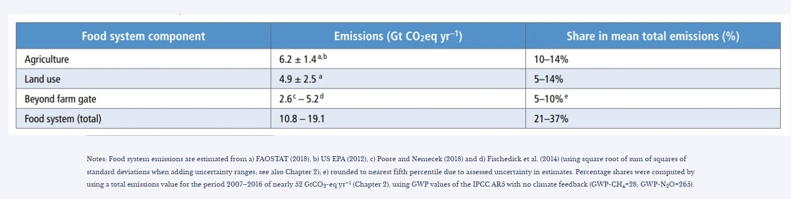

M03-AD-0303 · Agricultura
Agricultura, silvicultura y otros usos del suelo
En 2019, este sector aportó alrededor del 22 % de las emisiones mundiales netas de gases de efecto invernadero causadas por la actividad humana. Fueron unas 13 gigatoneladas de CO₂ equivalente en un año.
El IPCC agrupa bajo las siglas inglesas AFOLU la producción agrícola y ganadera, la gestión de los bosques y los cambios de uso de la tierra. El balance es neto porque combina lo que esas actividades liberan con el CO₂ que retiran de la atmósfera. El CO₂ equivalente permite expresar varios gases en una unidad común. IPCC, AR6, grupo III, apartado B.2.1.
¿Qué ocurre en un bosque, un pastizal o un cultivo?
- Dióxido de carbono (CO₂)
- Al convertir un bosque en pastizal se pierde carbono almacenado en la vegetación y puede disminuir el del suelo. En un bosque en regeneración, los árboles captan CO₂ al crecer. La tala, los incendios o un nuevo cambio de uso pueden devolver parte de ese carbono a la atmósfera.
- Metano (CH₄)
- Los microorganismos que ayudan a los rumiantes a digerir el alimento producen metano. También se genera cuando la materia orgánica se descompone con poco oxígeno, como sucede en arrozales inundados y en ciertos sistemas de almacenamiento de estiércol. Más sobre el metano.
- Óxido nitroso (N₂O)
- Al transformar el nitrógeno disponible en el suelo, los microorganismos liberan una parte como óxido nitroso. Tanto los fertilizantes minerales como el estiércol aportan nitrógeno. La cantidad emitida depende, entre otros factores, de la dosis y de la humedad del suelo.
Qué emisiones genera una granja y cómo influye el uso de la tierra
Para producir y conservar leche, una granja utiliza energía en la ventilación y climatización de las naves, el ordeño, la limpieza de los equipos y la refrigeración del depósito. Si la leche se pasteuriza o se transforma en queso en la propia explotación, también hay que calentar, enfriar, envasar y almacenar el producto. Estas operaciones forman parte de la huella de la leche antes de que salga el camión de reparto.
La gráfica sitúa esos procesos en el conjunto del sistema alimentario mundial. De cada 100 unidades de emisiones alimentarias, el estudio atribuye 31 a ganadería y pesca, 27 a cultivos, 24 al uso de la tierra y 18 al resto de la cadena. Estas últimas se reparten entre transporte (6), envasado (5), procesamiento (4) y venta (3). La refrigeración puede intervenir en varias etapas. El estudio no ofrece una cuota específica para climatizar o mantener una granja.
Los cultivos y pastos ocupan aproximadamente la mitad de la tierra habitable del planeta, según la síntesis de Our World in Data. El denominador excluye los glaciares y las tierras estériles, como los desiertos. Un pasto consolidado y otro recién abierto pueden ocupar la misma superficie y tener balances de carbono muy distintos. Our World in Data, distribución mundial del uso de la tierra.
Entre 2015 y 2025, la FAO estima que cada año se convirtieron en promedio 10,9 millones de hectáreas de bosque a otros usos en el mundo. Al contabilizar también la expansión forestal, la superficie mundial de bosque disminuyó en 4,12 millones de hectáreas al año. Las dos cifras miden superficie. Para estimar emisiones también importa cuánto carbono contenía el bosque perdido y cuánto acumulan las áreas que ganan cubierta forestal. FAO, Evaluación de los recursos forestales mundiales 2025.
¿Dónde se cuentan las emisiones de los alimentos?
En el reparto sectorial de 2019, el metano de las vacas se cuenta en AFOLU. La electricidad comprada para enfriar la leche figura en suministro energético. Al calcular la huella de la leche se reúnen ambas emisiones y se sigue el producto durante su transformación, conservación y distribución. Para clasificar la pasteurización importa qué proceso se realiza, incluso cuando la quesería está dentro de la granja.
El IPCC estimó que, en 2007–2016, el sistema alimentario generó entre el 21 % y el 37 % de las emisiones mundiales. La tabla distingue producción agrícola (10–14 %), uso de la tierra (5–14 %) y actividades posteriores a la salida de la explotación (5–10 %). Cada porcentaje se refiere al total mundial. El intervalo del sistema alimentario y el 22 % de AFOLU corresponden a periodos y agrupaciones diferentes y se solapan.

Qué medidas reducen las emisiones
- Conservar y restaurar. Evitar la deforestación protege el carbono ya almacenado. Restaurar bosques y humedales degradados puede recuperar reservas de carbono a lo largo del tiempo. La elección del terreno importa para la biodiversidad, el agua y los derechos de quienes lo utilizan.
- Ajustar el manejo agrícola. Adaptar la dosis y el momento de abonado a las necesidades del cultivo reduce el exceso de nitrógeno. En arrozales adecuados, alternar inundación y secado puede reducir el metano. El balance debe considerar también el óxido nitroso y el rendimiento.
- Reducir la presión sobre la tierra. Evitar pérdidas de alimentos y favorecer dietas saludables con mayor presencia de alimentos vegetales donde sea apropiado puede reducir la demanda de cultivos y pastos. El beneficio climático depende del uso posterior de la tierra liberada.
IPCC, AR6, grupo III, apartado C.9 sobre mitigación en AFOLU.